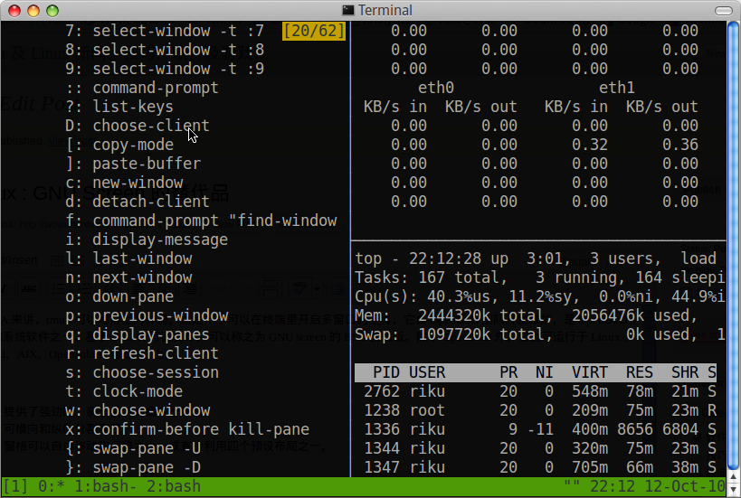
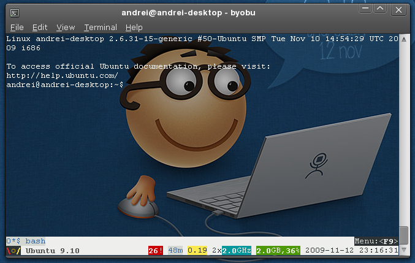

Created 星期六 14 七月 2012
GNU screen
- 对话 UNIX: 使用 Screen 创建并管理多个 shell
- Shell Tips: GNU Screen 的一些小技巧
- gnu screen快捷键速查表
- Tips for Remote Unix Work (SSH, screen, and VNC) - #! (shebang)
tmux: 功能上类似GNU screen, 但为BSD协议，部分功能比GNU screen更强
- Tmux : GNU Screen 的替代品 (软件)
- tmux 配置 & 使用 - yjj1s的专栏 - 博客频道 - CSDN.NET
- bash - How do I scroll in tmux? - Super User

Byobu 是对gnu screen和tmux做的封装和二次开发
- Experimenting with GNU/Linux: Enhancing terminals with byobu on Ubuntu 9.10
- Byobu Pimps Your Linux Terminal ~ Web Upd8: Ubuntu / Linux blog

- [emacs][vim][unix] RT @takaakikato: #tmux keybindings for #vi and #emacs . Yup, you can just run "man tmux". http://t.co/tv6g7iM [2011-01-14 10:15:31]
- [screen] 几个与窗口(它叫region)相关的快捷键: S:split, V:vert_split, TAB: focus(next region) X:remove Q:only(delete others) 我得改成跟Emacs一致才行 [2012-04-25 12:04:42]
- tmux里与pane相关的键: ":split vert, %:split horiz, x:kill, o:other, C-o:rotate, M-o:rotate backwards, {}:swap, arrows:jump to, C-arrows/M-arrows: resize, M-1..5: preset layouts [2012-04-25 13:42:52]
- tmux里面的window跟Emacs的frame比较象，每个有自己的window layout，tmux屏幕下方会先是window列表，切换到哪个就心里有数了 [2012-04-25 13:56:34]
- byobu是对gnu screen和tmux做的封装和二次开发，这里有两篇相关介绍: http://is.gd/ZIXThc (webupd8.org) http://goo.gl/nt3M (blogspot.com) [2012-04-26 11:39:20]
- [tmux] 如何查看历史输出，Shift-PgUp/PgDn不好使了？ 改用C-b [进入copy mode，然后就可以用PgUp/PgDn/光标来浏览历史输出了，按q退出。C-b PgUp也可以进入coy mode. http://superuser.com/a/209608 [2012-04-27 17:56:56]
- [tmux] C-b [ 进入的copy mode其实比较类似vi/emacs里面一个只读buffer，可以移动光标，可以搜索，用C-SPC开始选择，选择完后用M-w拷贝(拷贝后自动退出copy mode)，然后可以C-b ]粘贴(可在其它窗口粘贴), C-b =可以从剪贴板历史中选 [2012-04-28 14:29:53]
- gnu [screen]进入copy mode的方式跟tmux类似(C-a [)，但进入后它是vi style keybindings，第一次空格设置开始标记，然后用hjklw之类移动光标，第二次空格完成拷贝。粘贴也是用C-a ] [2012-04-28 17:55:56]
{kind=link}
{kind=link}